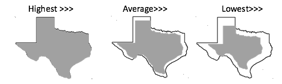
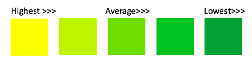

Comparing Gun Data Across the United States
Size of States
Select The Data
Gun Ownership
Gun Deaths Compared to Total
Gun Law Strictness
Color of States
Select The Data
Gun Ownership
Gun Deaths Compared to Total
Gun Law Strictness
Take a Closer Look
Gun Ownership(% of total population):
Gun Death Rates(per 100,000):
Giffords Law Center Gun Grade:
Guns & Ammo State Rank:
 
Gun ownership and social gun culture
State Firearm Death Rates 2016
Giffords Law Center Annual Gun Law Scorecard(2017)
Guns & Ammo Best States for Gun Owners(2017)